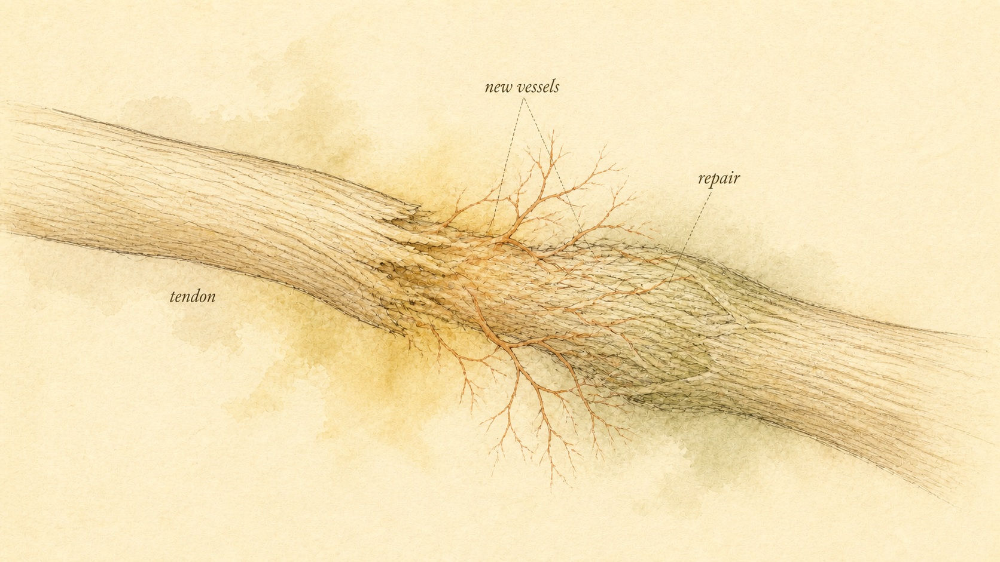

The Healing Peptides
BPC-157 and thymosin beta-4 carry the boldest repair claims in the entire peptide catalog, and almost everything holding those claims up still lives inside a rat.
Scroll far enough through an injury recovery forum, a strength sport subreddit, or the comment section under an athlete's post about a torn ligament, and two names surface with a very particular kind of confidence: BPC-157, and thymosin beta-4, almost always discussed under its marketed name, TB-500. The stories told about both compounds are strikingly similar wherever they appear. A stubborn tendon injury that had stalled for months suddenly starts moving again within weeks. A gut that had been inflamed and unpredictable calms down. An athlete who should have been sidelined for a season is back on the field in half the expected time. Somewhere along the way, BPC-157 in particular picked up the nickname "the wolverine peptide," a reference to the fictional superhero whose defining trait is that he heals from almost anything. The nickname sticks because it captures the pitch precisely: fast, near-total tissue repair, delivered by injection, with no surgeon involved.
This chapter is about that pitch, and about the considerable distance between the pitch and what has actually been demonstrated. BPC-157 and thymosin beta-4 are the two headline compounds in the tissue repair and healing corner of the peptide world, and they deserve a serious, mechanism-first look rather than a reflexive dismissal or an uncritical endorsement. Both have real, describable biology behind them. Both are backed by a genuine body of laboratory research, published in real journals, by real scientists. And both are, as of today, resting almost entirely on animal data, overwhelmingly from rodents, with a controlled human evidence base thin enough to count on two hands. Holding both of those facts at once, real biology and thin human evidence, without collapsing into either "it's all snake oil" or "it's basically proven," is exactly the discipline this chapter exists to build.
Our thread through this chapter is a learner named Lars, 34, an amateur distance runner who tore his Achilles tendon eight months ago and has been in slow, frustrating physical therapy ever since. Lars is not looking for a diagnosis or a treatment plan from this course, and this course will not offer him one. What sent him looking for a class like this was a specific moment: a training partner mentioned using BPC-157 during his own recovery from a similar injury and described the results as close to miraculous. Lars spent the following week reading everything he could find, and what he found was two things layered on top of each other, real biology he could not fully evaluate on his own, and a level of confidence about that biology, coming from vendor websites and forum testimonials, that ran well ahead of what the underlying research actually supported. He wanted to be able to tell those two things apart before he thought any further about his own recovery, and that is precisely the skill this chapter is built to give him.
Two molecules, two very different starting points
BPC-157 and thymosin beta-4 get talked about as though they belong to the same family, two interchangeable "healing peptides" a learner can swap for each other. They do not. Their origins, their sizes, and the kind of evidence that exists for each one are genuinely different, and getting that distinction straight is the first step toward evaluating either compound honestly.
BPC-157 is a synthetic peptide, a chain of 15 amino acids (a pentadecapeptide, GEPPPGKPADDAGLV), engineered as a partial sequence derived from a larger protein identified in human gastric juice, one researchers labeled a "body protection compound," which is where the name comes from. It is important to be precise here: BPC-157 itself is not a molecule the body produces and secretes as a finished, free-standing peptide. It is a synthesized fragment, built by chemists to reproduce a stretch of a naturally occurring stomach protein believed to play a role in defending the gastric lining. That gastric origin story is also central to BPC-157's marketing, because a peptide plausibly connected to stomach protection has an intuitive, if unproven, case for also protecting and healing gut lining tissue elsewhere in the digestive tract. According to Sikiric and colleagues (2006), the peptide is notably stable, able to survive conditions, including exposure to gastric acid, that would break down most other short peptides almost immediately, a property the researchers who first described it treated as central to its proposed biological role.
Thymosin beta-4 is a different kind of molecule entirely. It is a naturally occurring, 43 amino acid peptide, present in essentially every cell type in the human body and unusually conserved across species, meaning evolution has kept its structure nearly unchanged for a very long time, a strong biological signal that the molecule does something functionally important. It is especially concentrated in platelets and in the fluid that collects at a wound site, and it was first characterized decades ago specifically as an actin-binding protein, a role this chapter examines closely below. TB-500 is the name under which a synthetic version of this peptide, or in many marketed products a shorter fragment believed to retain its active binding region, is sold. That distinction between the well-studied native 43 amino acid molecule and the injectable product marketed as its synthetic stand-in matters, and this chapter will return to it directly.
There is a second layer of uncertainty sitting underneath the mechanism and evidence questions this chapter is built around, and it deserves naming here rather than left implied. Both compounds circulate almost entirely through an unregulated, grey research-chemical market rather than through pharmacy channels subject to independent quality testing. That means purity, concentration, and in the case of TB-500 specifically, even confirmation that a given vial actually contains the peptide its label claims, are not verified by any outside authority the way an approved medication's manufacturing is. That is a distinct concern from whether the underlying biology works, and it stacks on top of the animal-only evidence gap rather than replacing it: even a learner who fully accepted every claimed mechanism in this chapter at face value would still be taking on a second, separate layer of uncertainty about what is actually being injected.
Stated plainly, the way this course states every compound's purpose alongside its mechanism: BPC-157 is used, and marketed, for tendon, ligament, muscle, and gut lining healing, by way of claimed effects on new blood vessel growth and growth-hormone signaling described in the next section, with a current evidence grade of animal-only. Thymosin beta-4, marketed as TB-500, is used for tendon and muscle injury recovery and general tissue repair, by way of its documented role in regulating the cell's internal scaffolding, with a current evidence grade that is stronger for the underlying cell biology than for any specific injectable healing claim, and still overwhelmingly animal-only where whole-body healing outcomes are concerned. Both of those evidence grades sit near the bottom of the evidence ladder this course has used throughout: below approved human medicine, below controlled human trials, below even small human pilot data, and mostly resting on preclinical, rodent-level demonstration.
BPC-157's claimed mechanism: vessels, fibroblasts, and gut lining
The case made for BPC-157 rests on three interlocking claims, each with a specific proposed mechanism attached, and each worth walking through separately rather than accepting as one undifferentiated "it heals things" story. The first claim is angiogenesis, the formation of new blood vessels from existing ones. Damaged tendons and ligaments are notoriously slow to heal in large part because they are hypovascular, meaning they have a comparatively poor native blood supply to begin with, so anything that plausibly increases local blood vessel formation is mechanistically attractive as a healing accelerant. BPC-157's proposed route to this effect runs through the vascular endothelial growth factor (VEGF) pathway, a signaling system that, when activated, drives the proliferation and migration of the endothelial cells that form new vessel walls. According to Sikiric and colleagues (2006), BPC-157 preserves blood vessel integrity and function in rodent models of gastrointestinal injury and interacts with the nitric oxide signaling system in ways the researchers link to its vessel-protective and vessel-promoting effects.
The second claim is specific to tendon and ligament tissue, and it centers on a receptor most learners in this course have already met in a very different context: the growth hormone receptor (GHR). According to Chang and colleagues (2014), BPC-157 applied to tendon fibroblasts (the cells responsible for producing the structural collagen matrix of a tendon) isolated from the Achilles tendon of laboratory rats dose-dependently increased expression of GHR, and the addition of growth hormone to BPC-157-treated cells further increased cell proliferation, an effect the researchers traced to downstream activation of a signaling enzyme called Janus kinase 2. The proposed story is that BPC-157 sensitizes tendon fibroblasts to whatever growth hormone happens to be circulating, amplifying a repair signal that is already present rather than introducing an entirely new one. According to Cerovecki and colleagues (2010), BPC-157 given by injection, by mouth, or applied locally as a cream all improved measures of ligament healing, including functional, biomechanical, and histological outcomes, after surgical transection of the medial collateral ligament in rats.
The third claim returns to BPC-157's origin story: gut lining protection. Because the peptide is derived from a protein identified in gastric juice, and because much of the foundational research on it was conducted in models of gastric ulcers, esophagitis, and inflammatory bowel disease, BPC-157 is also marketed as a gut-healing compound in a more general sense, protecting and repairing the intestinal lining independent of any tendon or ligament injury. According to Sikiric and colleagues (2006), the peptide was already in trials for inflammatory bowel disease under earlier product names before BPC-157 became the label most commonly used in research and marketing.

What the BPC-157 evidence actually shows
Here is the honest accounting. According to Gwyer and colleagues (2019), reviewing the literature on BPC-157 and musculoskeletal soft tissue healing directly, every study investigating BPC-157's effect on tendon, ligament, and skeletal muscle healing to date has been performed in small rodent models, and the peptide's efficacy in humans remains, in their words, yet to be confirmed. That is not a hostile outside critique. It is the conclusion of researchers who reviewed the compound favorably overall, on the strength of consistently positive rodent findings, and who still could not point to a single controlled human trial establishing that BPC-157 accelerates tendon, ligament, or muscle repair in a person.
A second honesty point matters just as much as the animal-only status: the field studying BPC-157 is remarkably narrow. Over the past two decades, the large majority of the foundational papers describing BPC-157's mechanisms and effects have come from one research group based in Zagreb, Croatia, led by Predrag Sikiric, the pharmacologist credited with first isolating and characterizing the compound. That is not, by itself, a reason to dismiss the findings; a research group can be both the discoverer of a compound and a rigorous investigator of it. But when the evidence base for a molecule's entire mechanism of action, from gastric protection to angiogenesis to sphincter pressure regulation, traces back overwhelmingly to a small number of research teams working with the same peptide, independent replication becomes the single most important missing piece, and it remains largely missing. According to Gwyer and colleagues (2019), only a handful of research groups worldwide have performed in-depth studies of this peptide at all.
The regulatory picture reinforces the same conclusion from a different angle. According to Jozwiak and colleagues (2025), reviewing BPC-157's literature and patent landscape, the compound has never been approved for use in standard medicine by the United States Food and Drug Administration (FDA) or by any other global regulatory authority, specifically because of the absence of sufficient, comprehensive clinical studies confirming its benefits in humans. The same review notes that BPC-157 was temporarily placed on the World Anti-Doping Agency's (WADA) prohibited list in 2022 and is not currently listed as banned, a regulatory history worth sitting with for a moment: a substance can move on and off a prohibited list, and neither status change is evidence that the underlying human efficacy or safety question has actually been resolved. Being delisted from a doping ban is not the same thing as being cleared by a health regulator, and neither status is the same thing as a positive human clinical trial.
Thymosin beta-4: the actin-binding original behind TB-500
To understand what TB-500 is claimed to do, it helps to understand what its parent molecule, thymosin beta-4, actually does inside a cell, because this is one corner of the peptide world where the underlying cell biology is genuinely well established, even though the injectable healing product built on top of it is not. Every animal cell that moves, changes shape, or extends a projection to migrate somewhere new relies on a dynamic internal scaffold built from a protein called actin. Actin exists in two states: monomeric, free-floating individual units called G-actin (globular actin), and polymerized, assembled chains called F-actin (filamentous actin), the actual structural filaments a cell uses to crawl, contract, or hold its shape. A cell's ability to migrate depends on rapidly building and disassembling F-actin filaments at its leading and trailing edges, and that process depends, in turn, on carefully controlling how much free G-actin is available at any given moment.
This is where thymosin beta-4 comes in. According to Ying and colleagues (2023), thymosin beta-4 functions as a G-actin sequestering protein, binding a single G-actin monomer in a 1 to 1 ratio and, in doing so, controlling the threshold concentration of free actin available in the cytoplasm. By buffering that pool, thymosin beta-4 directly influences the balance between F-actin assembly and disassembly, a cycle researchers sometimes call actin treadmilling, and that balance in turn governs a cell's capacity for motility. According to Goldstein and colleagues (2012), this actin-regulating function is the mechanistic foundation for thymosin beta-4's broader roles in wound repair: it is released at an injury site by platelets and macrophages, and it promotes the migration of the specific cell types a healing wound actually needs on site, including endothelial cells that form new blood vessels, keratinocytes that reseal a skin wound's surface, and stem and progenitor cells recruited to help regenerate damaged tissue. The same review describes thymosin beta-4 reducing the number of myofibroblasts present in a healing wound, a cell type associated with excess scar formation, suggesting a role in limiting fibrosis as well as promoting repair.
TB-500 is the name under which a synthetic version of this biology is marketed, typically as an injectable product intended to reproduce thymosin beta-4's cell migration and repair-signaling effects for tendon, muscle, and general soft tissue injury. The claimed mechanisms, stated plainly next to the intended use: actin regulation supporting cell migration into an injury site, promotion of angiogenesis through that same migration effect on endothelial cells, and a general anti-inflammatory, anti-fibrotic contribution to the healing process. Those are legitimate, well-documented properties of the native 43 amino acid peptide in laboratory and animal settings. Whether an injectable product marketed as TB-500, which in many commercial preparations is a synthesized fragment rather than a verified, full-length copy of the native molecule, reliably reproduces those effects in a living human at a meaningful clinical scale is a separate question, and it is the one the next section addresses directly.
What the thymosin beta-4 and TB-500 evidence actually shows
The evidence picture here is more layered than BPC-157's, and it is worth being precise about which layer is solid and which layer is not. The underlying cell biology, the actin-sequestering mechanism described above, rests on a genuinely deep and long-standing body of research and is not seriously contested. What is far thinner is evidence that an exogenous, injected peptide marketed as TB-500 meaningfully accelerates tendon, muscle, or ligament healing in a living human being. Almost all of the functional healing data, the studies that actually measure tissue repair outcomes rather than cell behavior in a dish, again comes from animal models, and TB-500 as a consumer product has not been the subject of a published controlled human trial for musculoskeletal injury recovery.
The small amount of human data that does exist involves a different peptide preparation, a different delivery route, and a different medical context than the "inject it for a strained hamstring" claim circulating in gyms. According to Zhu and colleagues (2016), a pilot randomized trial in ten patients who had suffered a severe heart attack (an ST-segment elevation myocardial infarction) tested pretreating a patient's own endothelial progenitor cells with thymosin beta-4 in the laboratory before transplanting those cells back into the patient, and found the thymosin beta-4 pretreated group showed a greater improvement in a six-minute walking distance test and in measures of heart function after six months, with no severe procedure-related complications reported in either group. That is a real, published, human result, and it deserves to be named honestly as such. It is also a pilot study of ten total patients, split five and five between groups, using an ex vivo cell-pretreatment procedure that bears no resemblance to a self-administered injection for a sports injury, and it says nothing at all about tendon or ligament healing specifically.
According to Goldstein and colleagues (2012), the broader clinical development of thymosin beta-4 has focused on formal, pharmaceutical-grade trials of the recombinant, full-length peptide for specific, narrowly defined conditions, including dermal wounds, corneal injuries, and ischemic heart and central nervous system tissue, conducted under regulatory oversight distinct from the grey-market TB-500 sold for general athletic recovery. Even within that more formal research track, the same review is candid that clinical trial results for several of those indications remained preliminary or still in progress at the time of writing. Taken together, the honest evidence grade for TB-500's specific healing claims is the same as BPC-157's: overwhelmingly animal-only, with the small amount of controlled human data that exists sitting in a narrow, specific context that does not generalize to the broader claims made in the marketing around it.
Why an unapproved peptide can still be banned in sport
One detail trips up almost every learner encountering this material for the first time: how can a compound be banned in competitive sport while simultaneously not being approved as a medicine anywhere in the world? The two systems are answering different questions, and understanding the difference clears up a great deal of confusion around both BPC-157 and thymosin beta-4. A medical regulator like the FDA asks whether a compound has been shown, through controlled human trials, to be safe and effective for a specific medical use. An anti-doping authority like WADA asks a narrower, more precautionary question: does this substance have the potential to enhance performance, and is it not a substance normally present in the body at that concentration through ordinary means? A compound can fail the first question (never approved, insufficient human data) while still triggering the second (plausible performance or recovery advantage, exogenous administration), and that is exactly the position both compounds in this chapter occupy.
Thymosin beta-4 and its marketed derivative TB-500 are named specifically as examples of prohibited growth factors under WADA's Prohibited List, appearing under the category covering peptide hormones, growth factors, and related substances, banned at all times for athletes subject to testing, independent of whether TB-500's specific healing claims have ever been confirmed in a controlled human trial. The logic is precautionary rather than evidentiary: a synthetic peptide plausibly capable of promoting tissue repair and recovery, administered exogenously by injection, sits squarely inside the category anti-doping authorities are built to police, whether or not the peptide actually delivers the recovery benefit its marketing claims. BPC-157's history with the same list has been less consistent, moving onto a temporary prohibition in 2022 and off the current list since, a reminder that a compound's doping status can shift administratively even while the actual state of the human safety and efficacy evidence underneath it does not move at all.
The pro-growth double edge, and what long-term safety data does not exist
Every mechanism described so far in this chapter shares a common thread: promoting new blood vessel growth, promoting cell migration, promoting proliferation of fibroblasts and progenitor cells. In a torn tendon or an inflamed gut lining, that is exactly the biology a learner wants more of. But angiogenesis and cell proliferation are not tissue-specific switches that only turn on inside an injury site. They are general biological programs, and those same programs are precisely the ones a growing tumor depends on to establish its own blood supply and expand beyond the size a passive diffusion of oxygen and nutrients could sustain. This is not a claim that BPC-157 or thymosin beta-4 causes cancer. No controlled long-term human data exists to make that determination in either direction, and it would be dishonest to state a causal claim the evidence cannot support. It is, instead, a legitimate, biologically grounded theoretical concern: a peptide whose entire proposed value rests on amplifying pro-growth, pro-vascular signaling is mechanistically the kind of molecule that warrants long-term safety scrutiny before wide, unsupervised human use, and that scrutiny has not yet happened.
The animal literature underlying both compounds compounds this uncertainty rather than resolving it. Most rodent studies of BPC-157 and thymosin beta-4 are designed to measure healing over days to a few weeks, the timescale relevant to demonstrating a repair effect, not years, the timescale relevant to detecting a slow-developing safety signal like tumor promotion. A study built to answer "does this tendon heal faster" is not built to also answer "does years of exposure to pro-angiogenic signaling change this animal's cancer risk," and very few of the published studies on either compound were designed with that second question in mind at all. The absence of a reported problem in a six-week rodent tendon study is not the same thing as evidence of long-term safety, a distinction this course has emphasized before and will keep emphasizing, because it is one of the most commonly blurred lines in grey-market peptide marketing generally.
It helps to name the underlying reasoning error precisely, because it recurs constantly in this space: absence of evidence is not the same thing as evidence of absence. Nobody has published a study demonstrating that BPC-157 or thymosin beta-4 promotes tumor growth in a person. That is genuinely true, and marketing built around either compound tends to present it as reassuring. But nobody has published a study ruling that possibility out either, in the specific, prolonged, repeated-exposure way that would actually be needed to answer the question, and the reason nobody has is that the long-term controlled human trials capable of answering it have never been run. A precautionary read of a pro-angiogenic, pro-proliferative mechanism does not require assuming the worst. It requires being honest that the specific question, does sustained exposure to this signaling pathway change cancer risk over years, remains genuinely open, not quietly answered by the fact that nobody has raised an alarm yet in six weeks of rodent data.
The claimed-versus-shown gap, in one picture
It is worth putting the two compounds side by side one more time, stripped of narrative, because the visual comparison makes the evidence gap harder to talk past than a paragraph of qualifiers can. For BPC-157, the published literature contains a substantial number of rodent studies describing positive healing effects across tendon, ligament, muscle, and gut tissue, several dozen at minimum across two decades of research, and, as of this writing, no published controlled human trial demonstrating that the peptide accelerates healing of any of those tissues in a person. For thymosin beta-4 and TB-500, the picture is similar in shape though not identical in substance: a large body of animal and cell-culture work describing the actin-regulation mechanism and its downstream healing effects, and a human evidence base limited to a small number of narrow pilot studies, the ten-patient cardiac cell-pretreatment trial chief among them, none of which test the general tendon or muscle recovery claim that drives most of the compound's grey-market use.
Case study: Lars and the wolverine peptide
Running Lars's three beliefs back through this chapter resolves each one, and the pattern of correction is the actual skill this chapter is teaching. His first belief, that BPC-157's tendon-healing effect was reasonably well established in humans, collapses against the evidence reviewed directly above. According to Gwyer and colleagues (2019), every tendon, ligament, and muscle healing study on BPC-157 to date has been performed in small rodent models, and human efficacy remains unconfirmed. The mechanistic story, VEGF pathway upregulation, growth hormone receptor sensitization in fibroblasts, is real, published, peer-reviewed biology. It is also biology demonstrated in rat tissue and isolated rat cells, not in a human Achilles tendon, and not in Lars.
His second belief, that thymosin beta-4 and TB-500 are simply two names for the same thing, needed the distinction this chapter drew early on between the well-characterized 43 amino acid native peptide and the commercial products marketed under the TB-500 name, which in many cases are synthesized fragments rather than verified copies of the full molecule. The underlying actin-regulation biology is genuinely solid science. What is sold in a vial as TB-500 carries considerably more uncertainty about identity, purity, and whether it reproduces that native biology at all, on top of the same animal-only evidence gap that applies to BPC-157's healing claims.
His third belief, that a peptide's current absence from a doping ban functions as a safety endorsement, gets corrected by the distinction between what a medical regulator and an anti-doping authority are each actually evaluating. Thymosin beta-4 and TB-500 remain named, prohibited growth factors under the World Anti-Doping Agency's list at all times. BPC-157 moved off a temporary 2022 prohibition, a change in administrative status that says nothing about whether the compound has since been shown safe or effective in a controlled human trial, because it has not. Neither compound is approved as a medicine anywhere in the world.
What Lars walked away with was not a verdict on his own recovery, and this course does not offer one. It was also not a flat "these compounds are fake" dismissal, which would have been its own kind of overcorrection and just as inaccurate as the training partner's story. BPC-157's vascular and growth-hormone-receptor effects, and thymosin beta-4's actin-buffering role in cell migration, are real, published, mechanistically coherent biology. What Lars left with was a working model that holds both truths at once: mechanism is not outcome, animal data is not human data, and a compound's legal or doping status is a different question entirely from whether it has been proven to work in a person. Those three distinctions let him bring a sharper, more specific question to his own physical therapist and treating clinician, the people actually positioned to weigh his individual recovery, rather than a stronger opinion to the next forum thread.
Where this course stops: understanding is not permission
Before this chapter closes, the same frame that governs every chapter in this course needs restating plainly, because the stakes of blurring it are higher here than almost anywhere else in the peptide catalog. This is education and harm reduction. We explain the biochemistry, the proposed mechanism, the honest evidence grade, and the reasons a compound like BPC-157 or thymosin beta-4 attracts the interest it does, descriptively. We do not provide dosing guidance, cycle or protocol designs, or sourcing information, and nothing in this chapter is meant to function as a green light, a recommendation, or a how-to guide for using either compound.
That boundary follows directly from everything covered today, not from caution bolted on afterward. BPC-157's proposed vascular and growth-hormone-receptor mechanisms, thymosin beta-4's well-documented role in actin regulation and cell migration, and the honest, animal-dominated evidence base underneath both compounds are all true independent of any individual's decision about whether to ever use either one. That knowledge has value on its own, whether the learner holding it ever acts on it, whether they are a learner like Lars trying to evaluate a training partner's story, or simply someone who wants to recognize an overconfident healing claim when they encounter one. Neither compound is approved for medical use anywhere in the world, both carry an evidence base that is overwhelmingly preclinical, and the long-term safety picture for either one, particularly given the theoretical pro-growth signaling concern discussed above, remains genuinely unknown.
Decisions about how to manage an actual injury, a stalled recovery, or a chronic gut condition belong with a licensed clinician who can examine the specific tissue involved, order the relevant imaging or labs, and weigh treatment options against an individual's full medical history. That is true regardless of how much mechanism a learner has absorbed from a chapter like this one. Mechanism explains what a molecule appears to do in a rat tendon or a laboratory dish. It cannot tell a specific person, with a specific injury and a specific health history, what is safe or effective for them, and no chapter in this course will pretend otherwise.
This is exactly the discipline Lars needed more than any single fact about VEGF signaling or actin buffering. His actual situation, a slow but ongoing recovery from tendon surgery under a physical therapist's care, does not call for a peptide recommendation from this course, and it would not have called for one even if he had asked directly. What this chapter can responsibly give him, and what it is built to give every learner working through it, is the literacy to separate a real mechanism from a proven outcome, to notice when a rodent study is being quietly stretched into a human guarantee, and to know exactly where his own understanding needs to hand off to his treating clinician rather than to the next testimonial. That handoff point is not a gap in what he has learned today. It is the most useful thing this chapter leaves him with.
Key Takeaways
- BPC-157 is a synthetic, 15 amino acid peptide engineered as a partial sequence derived from a protein found in human gastric juice. It is not itself a molecule the body produces as a finished peptide.
- BPC-157's claimed mechanisms, vascular endothelial growth factor (VEGF) pathway upregulation driving angiogenesis, growth hormone receptor (GHR) upregulation in tendon fibroblasts, and gastric mucosal protection, are documented in rodent and isolated-cell studies. No published controlled human trial has confirmed these effects in a person.
- Thymosin beta-4 is a naturally occurring, highly conserved 43 amino acid peptide with a well-established role in buffering G-actin (globular actin) to regulate the actin cytoskeleton, enabling the cell migration behind wound healing and angiogenesis. TB-500 is the name under which a synthetic version, often a shorter fragment, is marketed.
- Human evidence for either compound's specific healing claims is minimal: a small pilot trial (n=10) of thymosin beta-4-pretreated cell transplantation after heart attack exists, but no controlled human trial supports the general tendon, muscle, or gut healing claims driving most current interest.
- BPC-157 is not approved as a medicine anywhere in the world and was temporarily, though not currently, prohibited by the World Anti-Doping Agency. Thymosin beta-4 and TB-500 remain named, prohibited growth factors banned at all times in sport, independent of whether their specific claims have been proven in controlled human trials.
- Pro-angiogenic, pro-growth signaling carries a legitimate, biologically grounded theoretical concern about feeding unwanted tissue or tumor growth. No long-term controlled human safety data exists for either compound, and most animal studies are not designed to detect a slow-developing safety signal at all.
Not every peptide marketed for repair targets a torn tendon or an inflamed gut. Chapter 3 turns to the cosmetic and regenerative side of the same biology, GHK-Cu (copper tripeptide) and the broader copper-peptide family, examining the collagen and wound-signaling mechanism behind skin and hair claims, and why the evidence picture looks meaningfully different for a topical product than for an injectable one.
References
Cerovecki, T., Bojanic, I., Brcic, L., Radic, B., Vukoja, I., Seiwerth, S., & Sikiric, P. (2010). Pentadecapeptide BPC 157 (PL 14736) improves ligament healing in the rat. Journal of Orthopaedic Research, 28(9), 1155-1161. https://doi.org/10.1002/jor.21107
Chang, C. H., Tsai, W. C., Hsu, Y. H., & Pang, J. H. S. (2014). Pentadecapeptide BPC 157 enhances the growth hormone receptor expression in tendon fibroblasts. Molecules, 19(11), 19066-19077. https://doi.org/10.3390/molecules191119066
Goldstein, A. L., Hannappel, E., Sosne, G., & Kleinman, H. K. (2012). Thymosin beta4: A multi-functional regenerative peptide. Basic properties and clinical applications. Expert Opinion on Biological Therapy, 12(1), 37-51. https://doi.org/10.1517/14712598.2012.634793
Gwyer, D., Wragg, N. M., & Wilson, S. L. (2019). Gastric pentadecapeptide body protection compound BPC 157 and its role in accelerating musculoskeletal soft tissue healing. Cell and Tissue Research, 377(2), 153-159. https://doi.org/10.1007/s00441-019-03016-8
Jozwiak, M., Bauer, M., Kamysz, W., & Kleczkowska, P. (2025). Multifunctionality and possible medical application of the BPC 157 peptide, literature and patent review. Pharmaceuticals, 18(2), 185. https://doi.org/10.3390/ph18020185
Sikiric, P., Seiwerth, S., Brcic, L., Blagaic, A. B., Zoricic, I., Sever, M., Klicek, R., Radic, B., Keller, N., Sipos, K., Jakir, A., Udovicic, M., Tonkic, A., Kokic, N., Turkovic, B., Mise, S., & Anic, T. (2006). Stable gastric pentadecapeptide BPC 157 in trials for inflammatory bowel disease. Inflammopharmacology, 14(5-6), 214-221. https://doi.org/10.1007/s10787-006-1531-7
Ying, Y., Lin, C., Tao, N., Hoffman, R. D., Shi, D., Chen, Z., & Gao, J. (2023). Thymosin beta4 and actin: Binding modes, biological functions and clinical applications. Current Protein & Peptide Science, 24(1), 78-88. https://doi.org/10.2174/1389203724666221201093500
Zhu, J., Song, J., Yu, L., Zheng, H., Zhou, B., Weng, S., & Fu, G. (2016). Safety and efficacy of autologous thymosin beta4 pre-treated endothelial progenitor cell transplantation in patients with acute ST segment elevation myocardial infarction: A pilot study. Cytotherapy, 18(8), 1037-1042. https://doi.org/10.1016/j.jcyt.2016.05.006